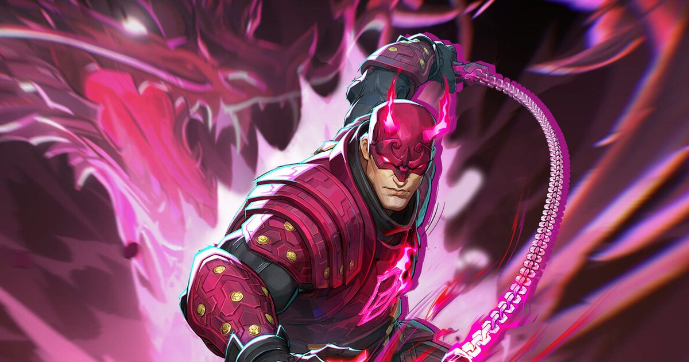

2026-10-23 · 玩法深读
网易在 10 月 22 日 09:00 UTC 推送了《漫威争锋》版本 20261022（免停机维护），正式加入「末日之路：复仇者联盟 终局之战（Path to Doomsday – Avengers: Endgame）」PvE 模式： 50 名玩家在复仇者联盟基地废墟里围攻灭霸，10 月 24 日开启首场，连开四周。 这是「末日之路」整条路线的最后一站，也是《漫威争锋》到目前为止人数最多的一次玩法实验——此前最大的场次是 18v18 的 36 人。 但如果你只记住「50 人」这三个字，就漏掉了这次更新里更重要的那个决定：它是整条路线里第一个不锁角色的模式。

这个模式不是全天开放，这是最容易踩的坑。官方节奏是这样的：
奖励方面，官方确认通关可获得美队「冬日战士」造型（免费），另有未具名的其他奖励。但要注意：解锁条件尚未公布，别默认打一局就给，开服后先去活动奖励页看清楚任务清单。这是美队的服装，不是「冬日战士」这个独立英雄的皮肤，也和「无限终章」那个免费雷神皮肤不是一回事。
这是本次更新最值得拆的一处设计取舍，几乎所有报道都没提。 回顾「末日之路」的前几站，每一站都严格限制可用角色，只能选那部电影里出现的人物：
换来的是什么？是成长系统的退场。 在此前的 PvE 模式（比如「血猎」）里，网易给过玩家通过词条/修正器逐步强化特定角色的机制——那是这类模式最重要的重复游玩动力：你第二次打，不只是想赢，是想试另一条构筑。 而《终局之战》据官方目前公布的信息，不提供任何角色强化途径。新鲜感全部压在「50 个人一起上」这件事本身上。
翻译成人话：网易用「构筑深度」换了「选人自由」。 对一个只开四周、每周两小时的限时模式来说，这个交换是理性的——玩家不会在一个两小时窗口里反复刷词条，他们要的是「我爱用谁就用谁，然后去看一场大场面」。 但它同时意味着 这个模式的可重复性会很薄：第一场最爽，第三场开始大概率只剩「和朋友一起凑热闹」这一层动力。
从预告和官方描述看，灭霸的处理方式和之前几个 boss 一脉相承，但规格拉满了：
50 人这个数字之所以成立，正是因为 boss 是这么设计的：伤害高到一个人扛不住，范围大到躲不掉，于是「人多」从冗余变成了唯一解。 但反过来的风险同样明确——当人数堆到 50，个人操作对结果的影响会迅速趋近于零。你打得好不好，可能还不如你有没有站在正确的半场。 这类模式的乐趣落在「奇观」而不是「策略」上，这大概正是它的设计目的：这是一场可以直播、可以截图、可以发朋友圈的事件，不是一场要靠配合才能过的副本。
把内容锁进每周两次的两小时窗口，在 2026 年的服务型游戏里不算新鲜，但《漫威争锋》这次的取舍很典型。它同时解决了三件事：
代价也很直白：错过就是错过。四场里你只有两次两小时，时区不友好的人可能一场都赶不上。这也是为什么我们建议把 10 月 24 日上午那场（北京 9–11 点）当成默认首选。
最后一层，也是最容易被忽略的一层。 「末日之路」从 4 月的洛基一路排到 10 月的终局之战，每一步都卡在 MCU 电影上映前的窗口上；而这条路线的终点并不在 10 月 24 日——12 月 18 日，《复仇者联盟：末日》电影上映当天，《漫威争锋》会同步上线 Doomsday 相关游戏内容。 《终局之战》只是这条线上最后一部「旧电影」主题站，它的作用是给 12 月那次真正的宣发冲刺做暖身。
看懂这一点，前面所有设计都说得通了：为什么人数要堆到 50（因为它要像一场首映礼）、为什么要排片（因为它要像一场放映）、为什么不锁角色（因为它希望所有人都能参与，而不是只有练度够的人）、为什么奖励给美队皮肤（因为这是最容易截图的那一刻）。 《漫威争锋》在这两个月里承担的不是「做一款好玩的 PvE」，而是「把电影的宣发预算换一种形式花出去」。 这不坏——玩家确实拿到了免费内容和一个热闹的周六上午。但把它当成一次玩法进化来期待，会失望。
我们的期待值：7.6 / 10（场面与题材 8.5 · 参与门槛 8.2 · 可重复性 6.0 · 长期价值 6.5 · 排片友好度 7.0）
我们的观察：这次更新最聪明的一步不是把人数堆到 50，而是第一次放开全角色。过去几站「只能选电影里出现的人」的做法，本质是把玩家的英雄池关掉一半，代价却从来没被公开讨论过。终局之战放开限制，等于承认了一件事：在 PvE 里限制角色，限制的不是代入感，是乐趣。
我们的观点：它值得打一场，不值得刷四周。模式没有成长词条、没有构筑空间、每周只有两小时，这三条叠在一起决定了它的曲线是「第一场 9 分，第二场 6 分，第三场开始纯粹是为了那份美队皮肤」。把它当成一场限时活动来参加，而不是当成《漫威争锋》的新常驻模式来期待，体验会好很多。
我们的案例 / 对比：
| 模式 / 作品 | 同场人数 | 是否锁角色 | 可重复性来源 |
|---|---|---|---|
| 末日之路：终局之战（本作） | 50 人 PvE | 不锁，全角色可用 | 奇观 + 奖励，无成长词条 |
| 末日之路：奥创纪元 | PvE 守塔 | 锁，仅电影角色 | 波次防守 |
| 末日之路：血猎（PvE） | 小队 PvE | 部分限制 | 角色修正器 / 词条构筑 |
| 《命运 2》突袭 | 6 人 | 不锁 | 机制分工 + 装备 build |
| 《绝地潜兵 2》大事件 | 全服共享战局 | 不锁 | 全服进度 + 社区叙事 |
| 《堡垒之夜》大事件 | 全场次一次性 | 不适用 | 不可重复，一次性演出 |
我们的实验（打完第一场后值得回答的三个问题）：
《终局之战》模式是一次很诚实的产品决策：它放弃了深度，换来了参与感；放弃了常驻，换来了事件性；放弃了 Josh Brolin，换来了能按时上线的配音。 对玩家来说，最划算的打开方式是——把 10 月 24 日上午 9 点到 11 点（北京时间）这个窗口留出来，约上朋友，用你最喜欢的那个英雄去废墟里打一次灭霸，拿完美队皮肤就收工。 别把它当成《漫威争锋》的未来形态，它是给 12 月 18 日那部电影做的一次暖场演出。演出挺好的，只是别在散场后还等着加演。